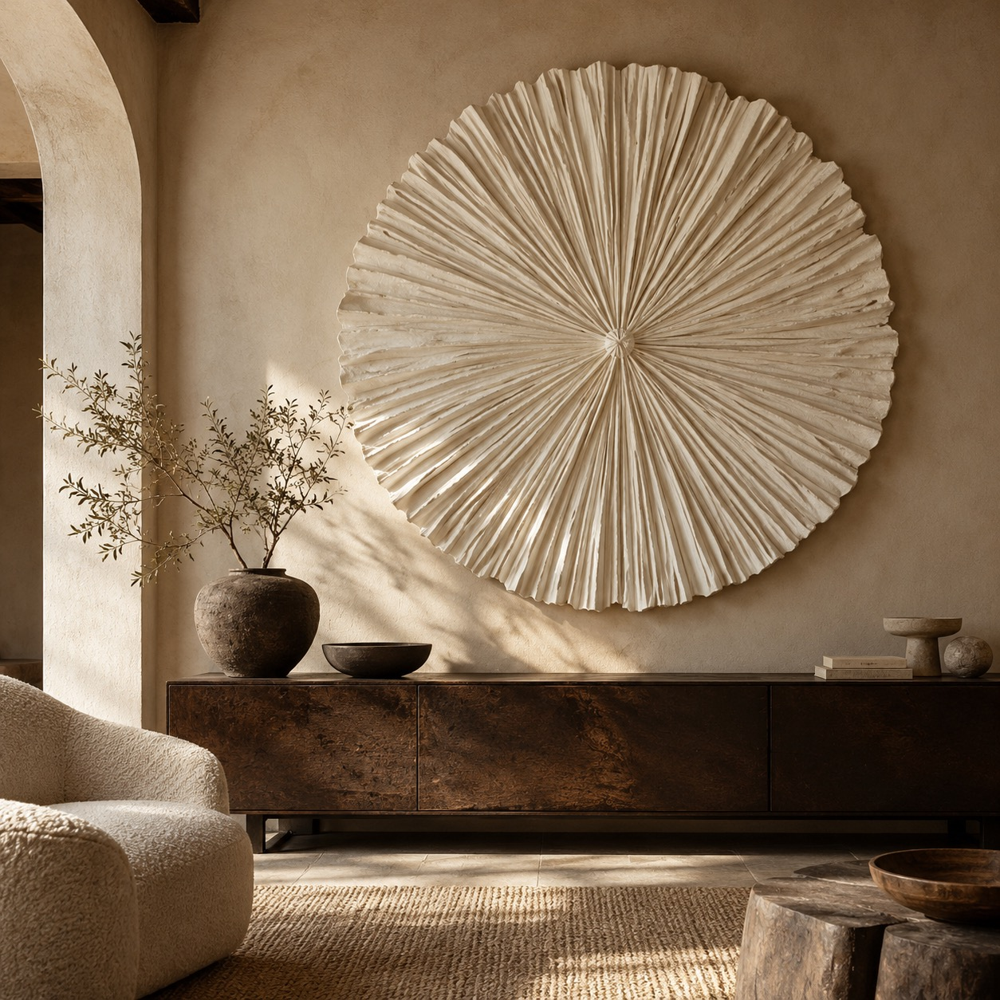
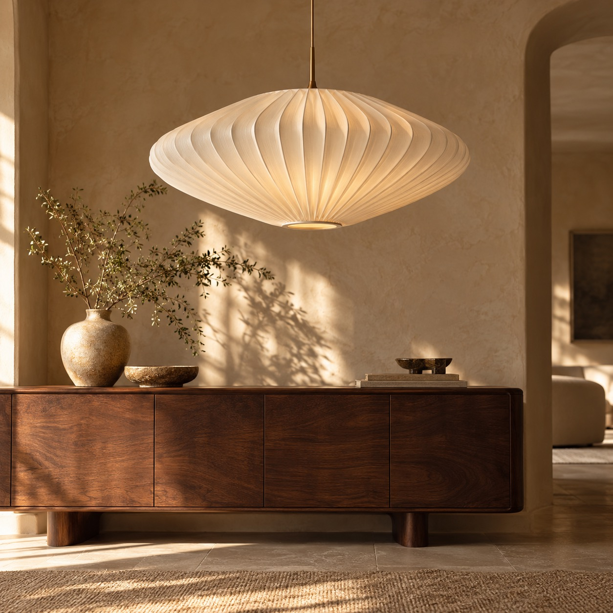
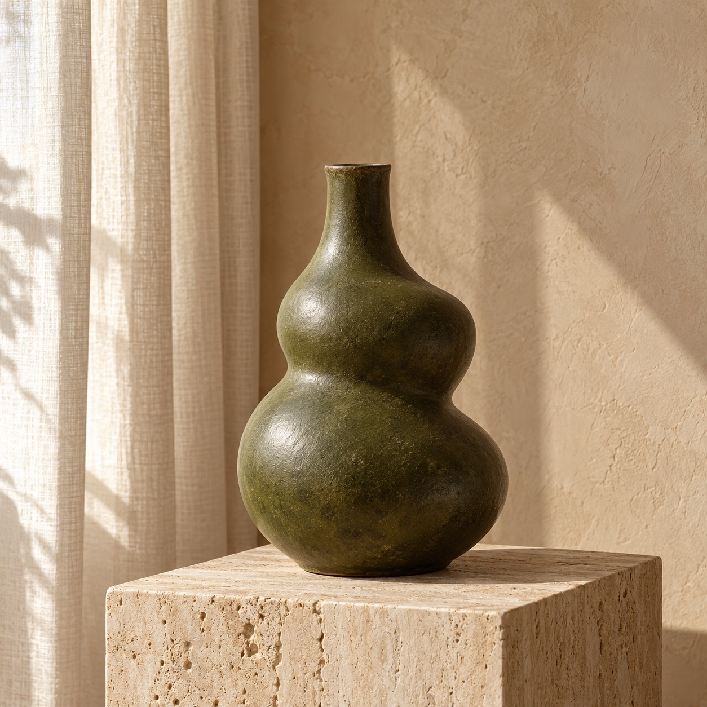

THE CASA FORMA POINT OF VIEW
Not just objects.
A way of feeling at home.
Light that softens a corner. Texture that catches your eye. A shape you want to reach out and touch. Explore a world of handcrafted pieces and the pleasure of making.
Step inside our Instagram ↗

